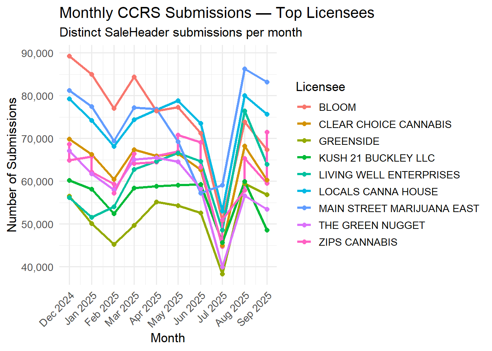

| LicenseeId | sale_month | n_submissions |
|---|---|---|
| 2265 | 2025-03-01 | 102557 |
| 876 | 2024-12-01 | 89263 |
| 2057 | 2025-08-01 | 86262 |
| 1010 | 2025-08-01 | 80045 |
| 1972 | 2025-08-01 | 76457 |
| 2550 | 2024-12-01 | 74214 |
| 30 | 2025-09-01 | 71506 |
| 687 | 2024-12-01 | 69879 |
| 2946 | 2024-12-01 | 68656 |
| 2518 | 2024-12-01 | 67156 |
| 37 | 2024-12-01 | 64831 |
| 69 | 2024-12-01 | 63242 |
| 49 | 2024-12-01 | 62017 |
| 2329 | 2024-12-01 | 60176 |
| 934 | 2025-08-01 | 59399 |
| 853 | 2025-05-01 | 57776 |
| 2019 | 2025-08-01 | 56676 |
| 2053 | 2025-08-01 | 54012 |
| 823 | 2025-08-01 | 52565 |
| 2342 | 2024-12-01 | 52232 |
Washington Cannabis Licensee Behavior Typology
Classifying CCRS Submission Patterns Across the Retail Ecosystem
CCRS
Licensee
Market Structure
This report develops a data-driven typology of Washington cannabis licensees based on CCRS submission behavior. Using monthly submission volume, volatility, persistence, and trend direction, we identify three stable behavioral archetypes that describe how licensees interact with the traceability system over time.
The Bottom Line Up Front
Washington cannabis licensees do not interact with CCRS uniformly.
When we examine submission volume, month-to-month volatility, trend direction, and persistence, licensees fall into three stable behavioral archetypes that describe how they operate within the regulated marketplace — independent of vendor branding or tooling.
This typology helps explain:
why some operators experience chronic compliance stress
why others appear resilient despite market compression
why statewide metrics are often dominated by a small number of actors
Identity and Methodology Note
This analysis intentionally avoids vendor or integrator attribution.
Instead, it evaluates licensee behavior directly, using distinct SaleHeader submissions as the atomic unit of CCRS interaction. This avoids inflation from record edits, corrections, or administrative churn and ensures that every submission counted represents a discrete compliance event.
Monthly aggregation is used to normalize seasonal effects and enable behavioral clustering over time.
How Do Licensees Actually Use CCRS?
This section quantifies how often, how consistently, and how long licensees submit CCRS records — revealing meaningful structural differences across the market.
Monthly Submissions by Distinct SaleHeaderId Counts (Top Licensees Only)

Clustering by Submission Behavior Dynamics
Licensee Behavioral Clusters
After correcting for industry-wide submission gaps in late 2025 and filtering for sufficient observation windows, Washington cannabis licensees fall into three distinct and stable behavioral archetypes.
Clustering inputs:
• Average monthly submissions
• Submission volatility (coefficient of variation)
• Trend direction over time
• Months active in the last 10-month window
After correcting for industry-wide submission gaps in late 2025, Washington cannabis licensees fall into three stable behavioral archetypes.
Cluster Definitions
Cluster 1 — Low-Volume, High-Volatility ~28% of licensees
Low submission volume
High month-to-month variability
Shorter observed activity windows
These licensees tend to operate intermittently and are most sensitive to staffing, seasonality, or operational disruptions.
Cluster 2 — Mid-Volume, Persistent ~60% of licensees
Moderate submission volume
Stable month-to-month behavior
Long persistence across the year
This cluster represents the operational backbone of Washington’s retail market.
Cluster 3 — Enterprise-Scale, Stable ~12% of licensees
Extremely high submission volume
Very low volatility
Long-lived presence in CCRS
Despite negative trend slopes (reflecting market compression), these licensees remain structurally stable and dominate statewide activity.
Final Summary Table
| Cluster | Avg Monthly Subs | CV | Months Active | Interpretation |
|---|---|---|---|---|
| 1 | ~600 | 0.85 | ~5.46 | Low volume, very volatile, short-lived |
| 2 | ~3,554 | 0.37 | ~9.53 | Moderate volume, stable, persistent |
| 3 | ~29,070 | 0.25 | ~9.01 | Extremely high volume, very stable |
Interpretation note: Lower CV indicates more regular, predictable submission behavior.
Join the Discussion
Your insights help drive better transparency and smarter policy in Washington’s cannabis industry.